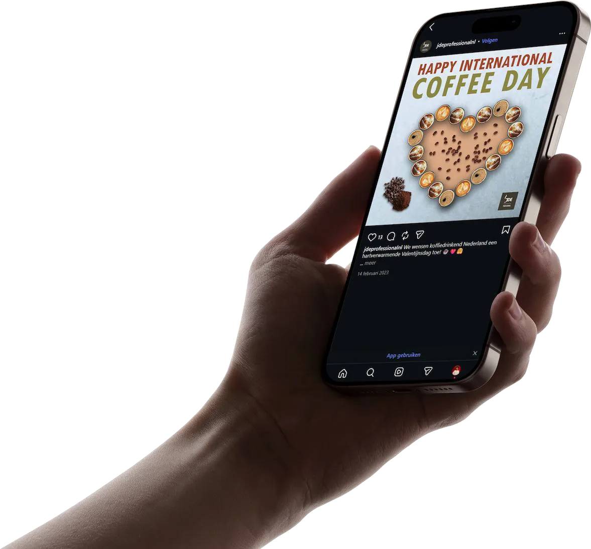
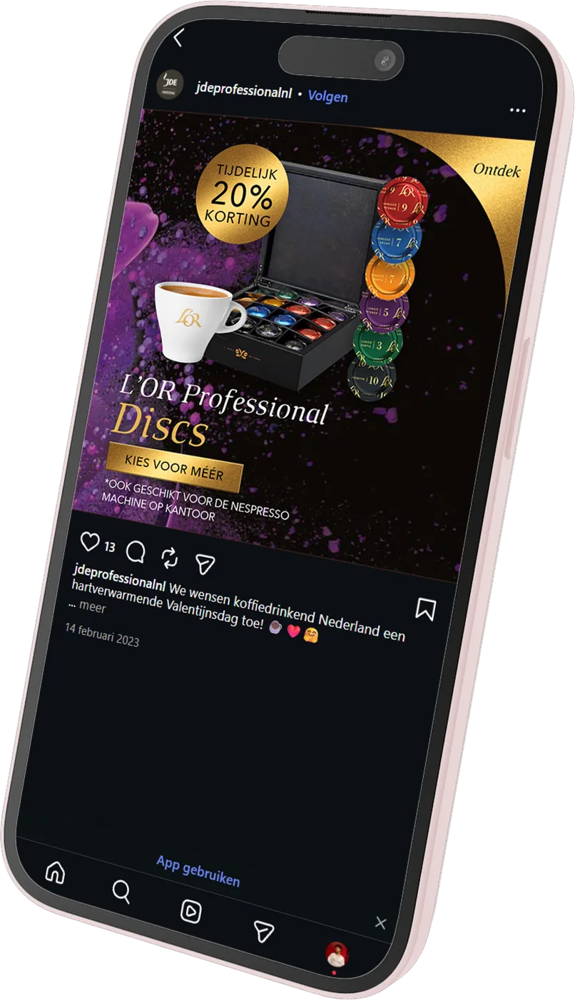
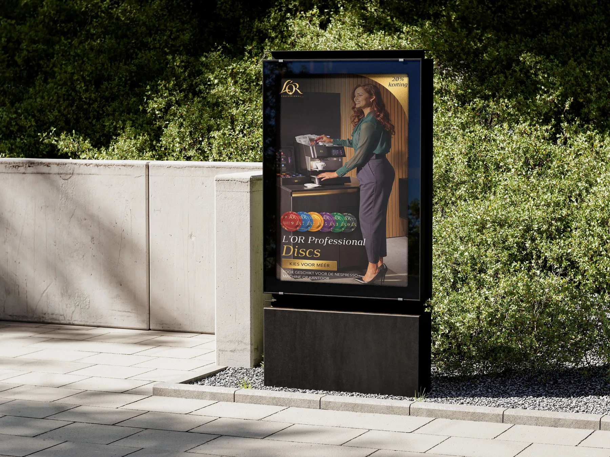

Douwe Egberts
stage
Vaardigheden
- Design thinking
- Lo- & Hi-fi prototyping (Figma)
- Front-End Development (Html, CSS, JS)
- Graphic Design (Adobe Suite)
- SEO Management


Ik heb mijn stage bij Jacobs Douwe Egberts (JDE) in Utrecht afgerond. Deze begon op 31 augustus 2022. Mijn opdracht richtte zich op het verbeteren van de JDE-e-commercecatalogus om de gebruikerservaring te optimaliseren, het websiteverkeer en de verkoop te verhogen.
Tijdens mijn stage deed ik onderzoek naar SEO, e-commercefilters en augmented reality (AR). Daarnaast implementeerde ik optimalisaties en ontwikkelde ik prototypes om de website te verbeteren. Ik werkte ook samen met het team en verzamelde inzichten van klanten om mijn oplossingen vorm te geven.

Tijdens deze stage was ik ook verantwoordelijk voor het maken van pakkende en professionele grafische ontwerpen. Deze werden gebruikt voor fysieke reclame-uitingen en op de socialmediakanalen van JDE.
Door de keuzevrijheid binnen de stage heb ik veel geleerd over best practices binnen e-commerce, SEO en augmented reality (AR).